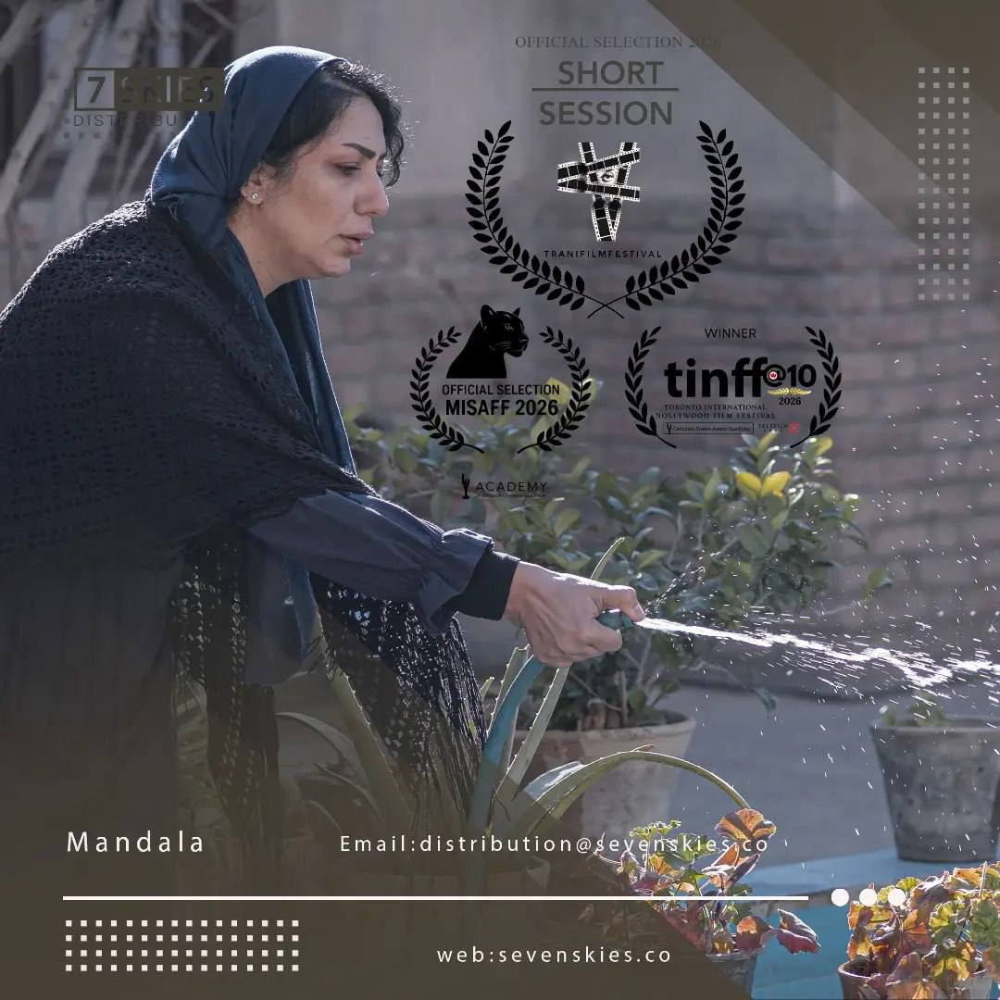

فیلم کوتاه «ماندالا» به کارگردانی بهنام خسروی، در تازهترین حضور بینالمللی خود به بیستوهشتمین دوره جشنواره TrFF ایتالیا، یعنی جشنواره فیلم ترانی (Trani Film Festival)، راه یافت. این خبر، حلقهای تازه به مسیر جشنوارهای فیلمی اضافه میکند که در ماههای اخیر نام آن در رویدادهای مختلف سینمای کوتاه شنیده شده است.
زمان و مکان جشنواره ترانی
جشنواره فیلم ترانی در شهر ترانی، در منطقهٔ پولیا در جنوب ایتالیا برگزار میشود. بیستوهشتمین دوره از ۲ تا ۶ دسامبر ۲۰۲۶ (۱۱ تا ۱۵ آذر ۱۴۰۵) است. برای فیلمسازان و علاقهمندان سینمای کوتاه، این بازهٔ پنجروزه فرصتی است تا فیلمهایی از کشورهای مختلف را در کنار هم ببینند.
جشنواره فیلم ترانی چه رویدادی است؟
ترانی با تمرکز بر حمایت از سینمای مستقل و معرفی استعدادهای تازه، بستری برای نمایش آثار کوتاه از سراسر جهان فراهم میکند. این جشنواره روایتها و تجربههای نو در سینمای معاصر را پیش روی مخاطب میگذارد و به همین دلیل برای فیلمهای مستقل و تجربی جایگاه مناسبی است.
ماندالا؛ یک حضور تازه در مسیر جهانی
«ماندالا» با این راهیابی نام دیگری به فهرست حضورهای بینالمللی خود افزوده است؛ مسیری که پیشتر با جشنوارههایی در انگلستان، کانادا و استرالیا ادامه داشت. برای مرور این مسیر میتوانید خبر «مسیر جشنوارهای ماندالا» و گفتگو با بهنام خسروی را در مستر شورتفیلم بخوانید.
اهمیت جشنوارهها برای فیلم کوتاه
فیلم کوتاه بیش از هر قالب دیگری از مسیر جشنوارهها دیده میشود. هر راهیابی به یک رویداد بینالمللی، فرصتی برای دیدهشدن در برابر مخاطب و منتقدانی از فرهنگهای دیگر است و میتواند راه را برای حضورهای بعدی باز کند. جشنوارههای ایتالیا نیز بخشی از نقشهٔ مهم سینمای مستقل اروپا هستند.
Mandala at the 28th Trani Film Festival (TrFF), Italy
The short film Mandala, directed by Behnam Khosravi, has been selected for the 28th edition of the Trani Film Festival (TrFF) in Italy. The festival takes place in Trani, in the Puglia region of southern Italy, from 2 to 6 December, and supports independent cinema while introducing new talent from around the world.
پیگیری اخبار
«ماندالا» چه فیلمی است؟
«ماندالا» فیلمی کوتاه به کارگردانی بهنام خسروی است که او در آن بازیگر نقش اول هم هست. این فیلم تا امروز در چند جشنوارهٔ بینالمللی دیده شده است؛ از جمله جایزهٔ بهترین بازیگر نقش اول مرد از جشنواره Accolade برای بهنام خسروی، جایزهٔ بهترین فیلم کوتاه تجربی از جشنواره TINFF کانادا و راهیابی به جشنوارههای Colortape استرالیا و استارلینگ انگلستان. هر یک از این خبرها در بخش جشنوارههای مستر شورتفیلم منتشر شده است.
ایتالیا و سینمای کوتاه
ایتالیا یکی از کشورهایی است که جشنوارههای متعددی برای سینمای کوتاه و مستقل در آن برگزار میشود. حضور یک فیلم ایرانی در برنامهٔ جشنوارهای در پولیا، نشاندهندهٔ توجه جشنوارهها به روایتهایی است که از فرهنگهای مختلف میآیند. برای فیلمسازان مستقل، چنین حضورهایی معمولاً فرصت دیدهشدن در میان مخاطبان تازه است.
نکاتی برای دنبالکردن اخبار جشنواره ترانی
برای پیگیری برنامهٔ نمایشها و اطلاعیههای رسمی، بهتر است به صفحهٔ جشنواره و شبکههای اجتماعی آن مراجعه کنید. ما نیز هر خبر تازه دربارهٔ «ماندالا» را در بخش جشنوارهها منتشر میکنیم. اگر به اخبار فیلم کوتاه علاقه دارید، صفحهٔ «اخبار فیلم کوتاه» مستر شورتفیلم را هم دنبال کنید.
پرسشهای متداول
جشنواره TrFF کجا برگزار میشود؟ در شهر ترانی در منطقهٔ پولیا در جنوب ایتالیا. بیستوهشتمین دوره چه زمانی است؟ ۲ تا ۶ دسامبر ۲۰۲۶ (۱۱ تا ۱۵ آذر ۱۴۰۵). کارگردان «ماندالا» کیست؟ بهنام خسروی. این جشنواره بر چه چیزی تمرکز دارد؟ بر سینمای مستقل و معرفی استعدادهای تازه.
مستر شورتفیلم روند حضور «ماندالا» در جشنواره ترانی و رویدادهای پیشرو را دنبال میکند و همینجا بهروز میکند. پخش بینالمللی این اثر بر عهدهٔ کمپانی سوناسکایز (Seven Skies) است. علاقهمندان و رسانهها برای پیگیری اخبار پخش میتوانند از طریق distribution@sevenskies.co با این کمپانی در ارتباط باشند.